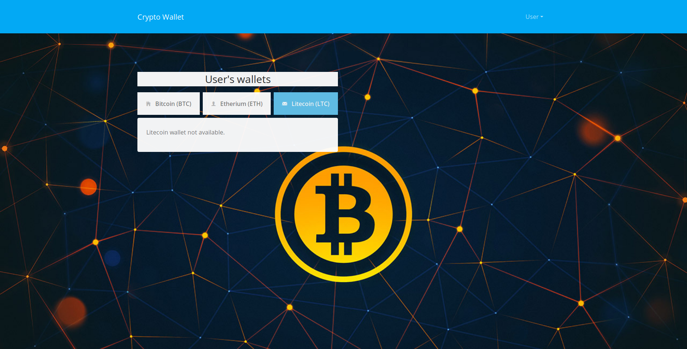

 Στην αρχική σελίδα μας βλέπουμε τα τρία διαφορετικά είδη cryptowallet (Bitcoin, Ethereum και Litecoin) που υποστηρίζει η πλατφόρμα. Σε κάθε καρτέλα μπορούμε να βρούμε το QR code που αντιστοιχεί σε κάθε ένα από τα wallets του χρήστη. Σε περίπτωση που ο χρήστης δεν έχει δηλώσει κάποια από τα wallets βλέπουμε το μύνημα "wallet not available.". Από το μενού ο χρήστης μπορεί να περιηγηθεί στις υπόλοιπες σελίδες της πλατφόρμας.
Στη σελίδα Login ο χρήστης χρειάζεται να συμπληρώσει το Username και το Password στα αντίστοιχα πεδία για να συνδεθεί.
Στη σελίδα Register ο χρήστης χρειάζεται να συμπληρώσει το Username, το Password και μία ακόμη φορά το Password για να δημιουργήσει έναν νέο λογαριασμό. Επίσης θα πρέπει να τσεκάρει το checkbox δηλώνοντας ότι συμφωνεί με τους όρους χρήσης και τέλος να πατήσει το κουμπί Submit.
Στη σελίδα Profile, ο χρήστης μπορεί να επεξεργαστεί τα στοιχεία του λογαριασμού του, δηλαδή όνομα, επίθετο και προαιρετικά τα τρία wallets του.